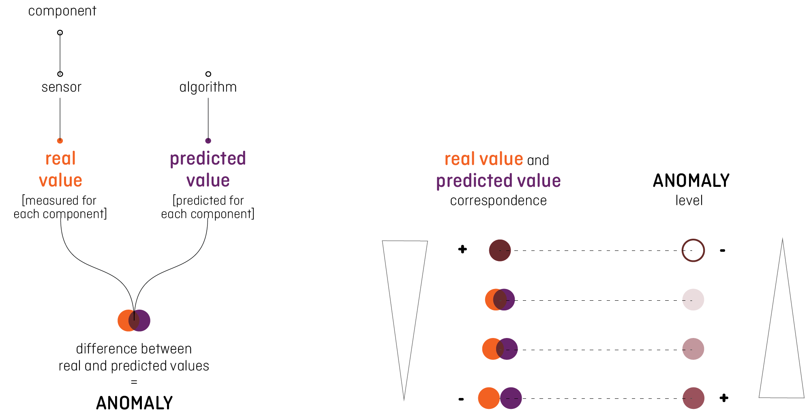
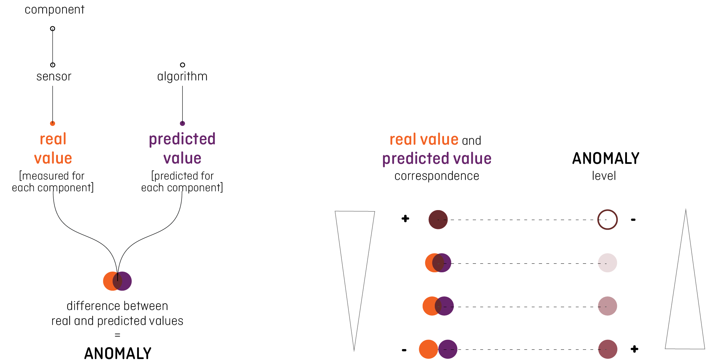
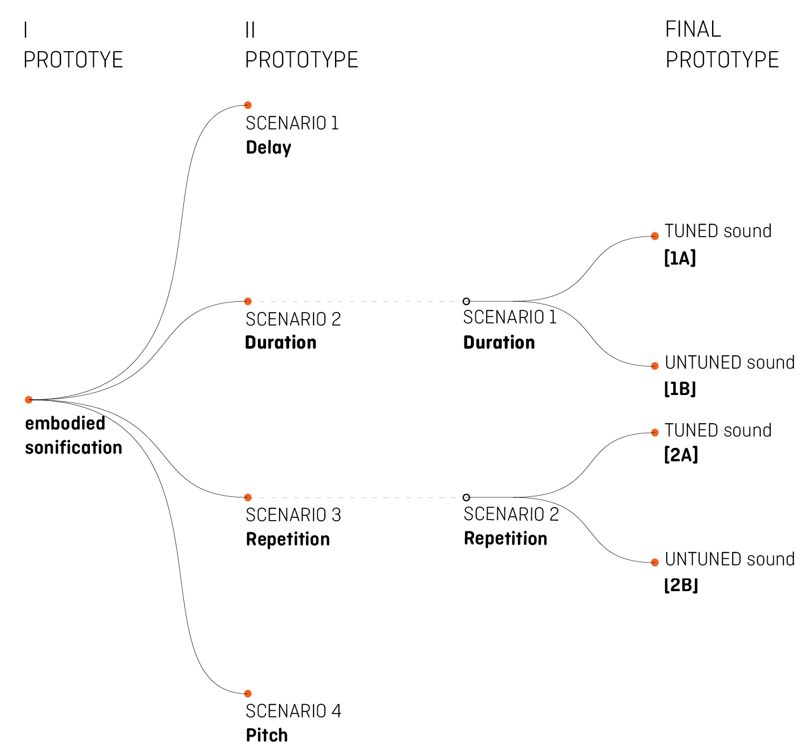

Data
The sonifications are based on an algorithm specifically designed for detecting and localizing cyber-attacks against water distribution systems. The algorithm, built on a Deep Learning model, is able to replicate the patterns of all hydraulic processes observed within a distribution system (paper sara). So, data is simulated and refers to a medium-big size network system, which gathers information from each sensor every hour. Data is differently organized by the system interface depending on the analyst requirement. It is not possible for the operator reading all the information because it is too much and too detailed. Besides, analysts’ visual channel cannot be focused on the monitor all the time, because are busy in different tasks during their work shift.
As the data comes every hour, we decided to design a few seconds long sonification quickly describing the status of the system. The cyclic nature of the communication aspires to represent an implicit appointment for the analyst punctually called to check the status of the system. The project idea is to assimilate the sound in the routine in the way analysts can work on other tasks, focusing their attention just in case something wrong is happening.
The status of the system is the first information we valuated to communicate, starting from the analysis of the context. We need two variables to calculate this information: the value describing the components trend, coming from the sensor on the network, and the value referred to the same components predicted by the algorithm without considering any irregularity. The delta between these values defined the level of the anomaly occurring to the system: if they correspond, the system is working without problems because the reality corresponds to the prediction, while the biggest the delta is, the more serious the alarm should sound.

We decided to consider the geographic position of each component in the network, to facilitate the identification of the district affected by the anomaly. Saving time between the alert and the visual analysis on the interface is crucial to contain the attack. Knowing the position of the component interested drives faster the user in the following deeper analysis.
The introduction of the anomaly level aspires to remove the “false-positive” problem, communicating the seriousness of the problem to the analyst, who can base the intervention on this information. We consider the specific value of each anomaly to design the sonifications, to spread the more accurate information. During the test, we clustered these values into categories to compare the answers of the different users, but the communication system has been designed to transmit all the exact values.
As the data comes every hour, we decided to design a few seconds long sonification quickly describing the status of the system. The cyclic nature of the communication aspires to represent an implicit appointment for the analyst punctually called to check the status of the system. The project idea is to assimilate the sound in the routine in the way analysts can work on other tasks, focusing their attention just in case something wrong is happening.
The status of the system is the first information we valuated to communicate, starting from the analysis of the context. We need two variables to calculate this information: the value describing the components trend, coming from the sensor on the network, and the value referred to the same components predicted by the algorithm without considering any irregularity. The delta between these values defined the level of the anomaly occurring to the system: if they correspond, the system is working without problems because the reality corresponds to the prediction, while the biggest the delta is, the more serious the alarm should sound.

We decided to consider the geographic position of each component in the network, to facilitate the identification of the district affected by the anomaly. Saving time between the alert and the visual analysis on the interface is crucial to contain the attack. Knowing the position of the component interested drives faster the user in the following deeper analysis.
The introduction of the anomaly level aspires to remove the “false-positive” problem, communicating the seriousness of the problem to the analyst, who can base the intervention on this information. We consider the specific value of each anomaly to design the sonifications, to spread the more accurate information. During the test, we clustered these values into categories to compare the answers of the different users, but the communication system has been designed to transmit all the exact values.
C-Town
As already said, the information about the water supply system are not public. For this reason, the data used during the project is not real and is created for the BATADAL competition (ref), a “Battle of the Attack Detection Algorithms” organized to compare the performance of algorithms for the detection of cyber-attacks in water distribution systems, developed by participants.
The dataset provides the information of all the network components selected for a time range. A network of a medium-large city, called C-Town, is considered to create this dataset. The water supply system of a city is usually divided in different areas, to maintain the operation independent one by the other in case of a breakdown. For this reason, we focused on just one portion of the supply system, including the monitoring of:
- the water level of 7 tanks;
- the inlet and the outlet pressure of 1 valve and 11 pumps;
- the water flow of 1 valve and 11 pumps;
- the status of 1 valve and 11 pumps; (mappa slide 36 / graphic representation of the water supply network of C-Town) All the values are registered with a free scale number, excepted for the status, marked by a binary code indicating the opening or closing of the components.
During the BATADAL competition three datasets were supplied. The first one had the purpose to train the algorithm to a situation without any attack. It referred to 365 days of a regular operation. The second one contains data for 6 months when 7 attacks were perpetrated to the system. The attacks are identified and reported by the organizers of the competition. Through this description we started to analyse the pattern of the attacks, understanding the behaviour and the contradiction inside the data referring to the irregularities. The algorithm performance was tested on the last dataset, containing data of 3 months with not officially reported attacks. The first idea considered the conversion of the component values in sound features which can express the trend of the system. But in this way, the analyst should evaluate the seriousness comparing the value listened with the value that was supposed to be. This operation would require a great mental effort with the result of a misleading, depending on the analyst evaluation. So, we tried to simplify this operation, providing the analyst the final information directly pointing out a possible attack. We considered a new dataset containing the numbers indicating the difference between the real value gathered by sensors and the prediction calculated by the algorithm for the same components. The values we used for the sonifications depict how the real situation is distant from the ideal one. Considering this delta value, it is also possible evaluating the components on an equal level without restriction imposed by the different nature of the number they referred to (water level, pump and valve status and flow).
The dataset provides the information of all the network components selected for a time range. A network of a medium-large city, called C-Town, is considered to create this dataset. The water supply system of a city is usually divided in different areas, to maintain the operation independent one by the other in case of a breakdown. For this reason, we focused on just one portion of the supply system, including the monitoring of:
- the water level of 7 tanks;
- the inlet and the outlet pressure of 1 valve and 11 pumps;
- the water flow of 1 valve and 11 pumps;
- the status of 1 valve and 11 pumps; (mappa slide 36 / graphic representation of the water supply network of C-Town) All the values are registered with a free scale number, excepted for the status, marked by a binary code indicating the opening or closing of the components.
During the BATADAL competition three datasets were supplied. The first one had the purpose to train the algorithm to a situation without any attack. It referred to 365 days of a regular operation. The second one contains data for 6 months when 7 attacks were perpetrated to the system. The attacks are identified and reported by the organizers of the competition. Through this description we started to analyse the pattern of the attacks, understanding the behaviour and the contradiction inside the data referring to the irregularities. The algorithm performance was tested on the last dataset, containing data of 3 months with not officially reported attacks. The first idea considered the conversion of the component values in sound features which can express the trend of the system. But in this way, the analyst should evaluate the seriousness comparing the value listened with the value that was supposed to be. This operation would require a great mental effort with the result of a misleading, depending on the analyst evaluation. So, we tried to simplify this operation, providing the analyst the final information directly pointing out a possible attack. We considered a new dataset containing the numbers indicating the difference between the real value gathered by sensors and the prediction calculated by the algorithm for the same components. The values we used for the sonifications depict how the real situation is distant from the ideal one. Considering this delta value, it is also possible evaluating the components on an equal level without restriction imposed by the different nature of the number they referred to (water level, pump and valve status and flow).
How the Sonifications are built
We assigned the delta values to a sound parameter, then we had to transform the number into the sonification. The real scenario would entail a real time sound mapping, but, as we could not get the real data, we had to use simulated ones to build the sonifications. If the prototype is realized and applied in the real context, a Web Audio API system will be required to map the values contextually. During the project, we worked with data referring to the past, creating tracks to simulate the real function of the prototype.
A Python script (link rif) allowed us to convert the value of the components in a MIDI (Musical Instrument Digital Interface) file, containing the information about the sound producing way. Loading this file into a software program able to interpret the data has been possible to associate specific sound to each parameter. The features required in the MIDI file depict the time when the sound starts, the pitch, the velocity and the duration. So, we coded the same amount of MIDI files as the sonifications required to simulate the real scenario, considering a 8 hour daily work and then, we used Ableton Live 10 (link rif) to assign a sound to each parameter. We experimented different sounds from Ableton, our personal and Philarmonia Orchestra Library (link rif).
A Python script (link rif) allowed us to convert the value of the components in a MIDI (Musical Instrument Digital Interface) file, containing the information about the sound producing way. Loading this file into a software program able to interpret the data has been possible to associate specific sound to each parameter. The features required in the MIDI file depict the time when the sound starts, the pitch, the velocity and the duration. So, we coded the same amount of MIDI files as the sonifications required to simulate the real scenario, considering a 8 hour daily work and then, we used Ableton Live 10 (link rif) to assign a sound to each parameter. We experimented different sounds from Ableton, our personal and Philarmonia Orchestra Library (link rif).
How the Sonifications are built
We assigned the delta values to a sound parameter, then we had to transform the number into the sonification. The real scenario would entail a real time sound mapping, but, as we could not get the real data, we had to use simulated ones to build the sonifications. If the prototype is realized and applied in the real context, a Web Audio API system will be required to map the values contextually. During the project, we worked with data referring to the past, creating tracks to simulate the real function of the prototype.
A Python script (link rif) allowed us to convert the value of the components in a MIDI (Musical Instrument Digital Interface) file, containing the information about the sound producing way. Loading this file into a software program able to interpret the data has been possible to associate specific sound to each parameter. The features required in the MIDI file depict the time when the sound starts, the pitch, the velocity and the duration. So, we coded the same amount of MIDI files as the sonifications required to simulate the real scenario, considering a 8 hour daily work and then, we used Ableton Live 10 (link rif) to assign a sound to each parameter. We experimented different sounds from Ableton, our personal and Philarmonia Orchestra Library (link rif).
A Python script (link rif) allowed us to convert the value of the components in a MIDI (Musical Instrument Digital Interface) file, containing the information about the sound producing way. Loading this file into a software program able to interpret the data has been possible to associate specific sound to each parameter. The features required in the MIDI file depict the time when the sound starts, the pitch, the velocity and the duration. So, we coded the same amount of MIDI files as the sonifications required to simulate the real scenario, considering a 8 hour daily work and then, we used Ableton Live 10 (link rif) to assign a sound to each parameter. We experimented different sounds from Ableton, our personal and Philarmonia Orchestra Library (link rif).
Final Premise
To read appropriately the prototypes, it is important to consider: first, the main purpose of the sonification is to communicate the status of the system, while the geographic reference is a secondary information supposed to be assimilated by analysts after a short period of training; second, the sound channel does not want to substitute the visualization currently used. The goal of the sonification is to attract the attention of the user when some problems are revealed by the system and drive him into a faster and more accurate analysis on the screens.
We excluded the possibility to design a continuous sonification and we also excluded the possibility to give the silence a value, because a communication system breakdown could be confused with the signal of an alarm. In addition, the literature taught us not to undergo the analyst to a continuous sound because of the alarm fatigue and the effect the sound could have on human performance (link rif).
We did not find specific information about the kind of sound more suitable on this purpose. So, we started considering both harmonic and non-harmonic sounds. Two prototypes are designed. The first one was useful to be aware of data and users’ habits and needs. Though considered inappropriate, we decided to describe the first one as part of the project. because we defined the second prototype starting from the errors previously committed. The final experiment conducted on six real users revealed positive and negative aspects of the project and scientifically validated our research, too.

We excluded the possibility to design a continuous sonification and we also excluded the possibility to give the silence a value, because a communication system breakdown could be confused with the signal of an alarm. In addition, the literature taught us not to undergo the analyst to a continuous sound because of the alarm fatigue and the effect the sound could have on human performance (link rif).
We did not find specific information about the kind of sound more suitable on this purpose. So, we started considering both harmonic and non-harmonic sounds. Two prototypes are designed. The first one was useful to be aware of data and users’ habits and needs. Though considered inappropriate, we decided to describe the first one as part of the project. because we defined the second prototype starting from the errors previously committed. The final experiment conducted on six real users revealed positive and negative aspects of the project and scientifically validated our research, too.
FIRST PROTOTYPE
The first prototype was designed using embodied metaphors (Roddy rif). Because of the great amount of the information considered to build the sonification, we decided to make intuitive the users’ comprehension of the message, using sounds somehow linked to the component the data referred to. We selected the most relevant information from the dataset, considering a context analysis. The sonification was meant to communicate the component under attack (tanks, pumps, valves) and the variable (level, state, flow) useful to make the operator aware of what is happening. Because of the variety of the data, we built the sonification on two different layers. At the first level, which stays at the background of the sonification, a different sound was chosen to represent each network’s component: tanks, pumps, valve. The second layer is built upon punctual sounds, one for each variable associated with the component: water level for tanks, pressure and flow for valves and pumps. Sound order is played following the geographic position of the components, reading the network’s map from left to right. The behaviour of each sound is linked to the trend of the component it refers to. The distortion of the original sound means an anomaly to the component it represents. To compose the sonification we used three level of distortion (low, medium and high), depending on the level of the anomaly reported by data. This Prototype includes two options, designed using different sound content over the same mapping strategy.
The sonification has been played for 2 minutes long every hour. We tried to consider as much as information as possible, but the final result was evaluated excessively long and too difficult to be completely understood. This first prototype description is useful to reveal some priority we carried on for the second prototype.
The sonification has been played for 2 minutes long every hour. We tried to consider as much as information as possible, but the final result was evaluated excessively long and too difficult to be completely understood. This first prototype description is useful to reveal some priority we carried on for the second prototype.
OPTION [1]
Sonification
Sound-key
Background sound for network components:
Individual sounds for components' variable, with different levels of anomaly:
TANK STATUS:
PUMP STATUS:
VALVE STATUS:
JUNCTION STATUS:
OPTION [2]
Sonification
Sound-key
Background sound for network components:
Individual sounds components' variable:
Different level of noise for anomaly:
SECOND PROTOTYPE
The feedback received about the first prototype drove us to define this second one, which includes 4 different Scenarios based on a different structure of the data-to-mapping strategy. In each Scenario, five different sounds represent the five districts. In Scenarios 1, 2 and 3, a different sound is associated to each district. The behaviour of each sound over time depends on the numerical value of the anomaly, as it comes from the algorithm. In Scenario 4, districts are identified by the order they are played, while the level of anomaly is represented by a change in the pitch of each sound.
Every mapping strategy is described in detail. Three sonification examples are provided for each Scenario, representing the status when regular and when low and high level of anomaly is registered. Each Scenario is repeated twice, to increase the users’ opportunity to listen to it.
Every mapping strategy is described in detail. Three sonification examples are provided for each Scenario, representing the status when regular and when low and high level of anomaly is registered. Each Scenario is repeated twice, to increase the users’ opportunity to listen to it.
SCENARIO 1 - Delay
Each sound is 3 second long. Every district is represented by a sound, a total of 5 sounds are played. All sounds start at time 0, at the beginning of the sonification, and in case of no anomaly they stop playing after 3 seconds, covering the whole duration of the track. In case of anomaly, the sound representing the anomalous district has a delayed start direct proportional to the importance of the anomaly, as taken from the data of reconstruction error.
SCENARIO 2 - Length
In this Scenario, all the sounds start together at the beginning of the sonification. If no anomaly is occurring, sounds stop after 1 second, otherwise, the duration increases direct proportional to the anomaly level contained in the district.
SCENARIO 3 - Repetition
The sounds of the anomalous district is repeated for 3 seconds on a rhythm imposed by the level of the anomaly. The higher the anomaly coming from the data is, the more frequent the sound will be played. In case of no anomaly, the sound plays just one time at the beginning.
SCENARIO 4 - Pitch
In this case, the districts are represented by sounds which play one by one. The pitch of each sound increases proportionally to the level of the anomaly. The higher the note is, the higher the level of anomaly has been registered.
A critique session with experts was run and the feedbacks helped us to select the two Prototypes that seemed to be more promising. We focused on Scenario 2-Length and Scenario 3-Repetition, numbered from here: Scenario 1-Length and 2-Repetition. As no literature was found about the role of the harmonic or non-harmonic sound in this context, we decided to develop each Scenario in two different directions, corresponding to the nature of the sound used to play the mapping strategy already described: the letter A is assigned when the sound used is tuned, letter B is for an untuned sound. The maximum duration of each sonification was capped at 10 seconds. These 4 final Scenarios (1A, 1B, 2A, 2B) were tested in an experiment with real users who dedicated a day to each Scenario. During that day, they listened to 8 sonifications (one every hour), from 10am to 6pm. The experiment protocol is later described. Here you can find first, the Sonifications played during the test, grouped per Scenario and hour, and second, the Sound-Key for each Scenario provided to the users playing the sound of the district indicated. No demo-tracks playing all the districts sounds together were provided to the users before the test.
THIRD PROTOTYPE
From the previous Prototype, two Scenarios were brought forward: Scenario 2-Length and 3-Repetition. The maximum duration of each sonification was capped at 10 seconds.
Two different versions based on different sound contents were implemented: version A with tuned sounds and version B with non-tuned sounds.
These 4 final Scenarios (1A, 1B, 2A, 2B) were tested in an experiment with real users who dedicated a day to each Scenario. During that day, they listened to 8 sonifications (one every hour), from 10am to 6pm.
Here we have collected the p3/Sonifications they listened to during testing days. Sonifications are grouped per Scenario and hour they were played. Prior to testing, users were provided only to the Sound-Keys for each Scenario (no demo of the hourly sonification was provided). You can listen to each Sound-Key below.
Two different versions based on different sound contents were implemented: version A with tuned sounds and version B with non-tuned sounds.
These 4 final Scenarios (1A, 1B, 2A, 2B) were tested in an experiment with real users who dedicated a day to each Scenario. During that day, they listened to 8 sonifications (one every hour), from 10am to 6pm.
Here we have collected the p3/Sonifications they listened to during testing days. Sonifications are grouped per Scenario and hour they were played. Prior to testing, users were provided only to the Sound-Keys for each Scenario (no demo of the hourly sonification was provided). You can listen to each Sound-Key below.
[1A]
The sounds of each district start together at the beginning of the sonification. The duration increases in a direct proportional to the increase in values of the anomaly level in data.
The sonification is based on a tuned sound.
The sonification is based on a tuned sound.
Sonification
Sound-Key
[1B]
The sounds of each district start together at the beginning of the sonification. The duration increases in a direct proportional to the increase in values of the anomaly level in data.
The sonification is based on an untuned sound.
The sonification is based on an untuned sound.
Sonification
Sound-Key
[2A]
The sounds of each district start together at the beginning of the sonification. The times they repeat increase in a direct proportional to the increase in values of the anomaly level in data.
The sonification is based on a tuned sound.
The sonification is based on a tuned sound.
Sonification
Sound-Key
[2B]
The sounds of each district start together at the beginning of the sonification. The times they repeat increase in a direct proportional to the increase in values of the anomaly level in data.
The sonification is based on an untuned sound.
The sonification is based on an untuned sound.
Sonification
Sound-Key